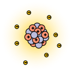
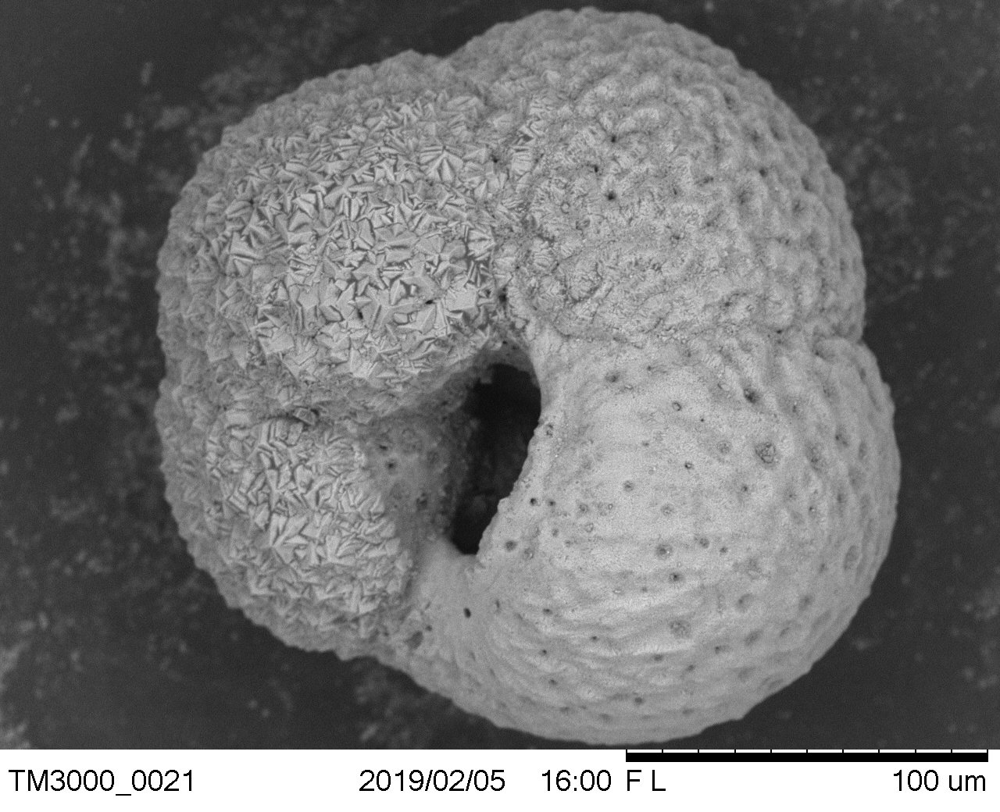
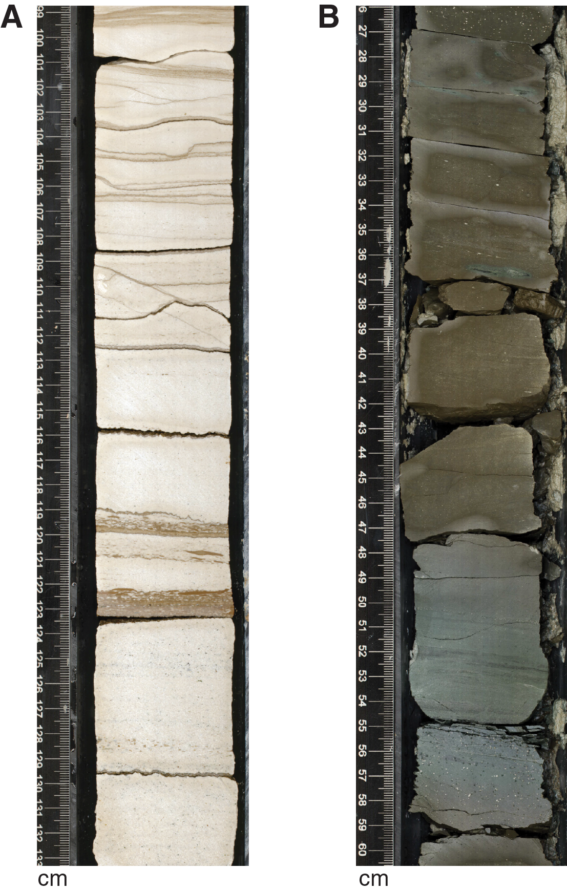

Reading Earth history from chemistry
ENVI 1301
Graham H. Edwards, Earth & Environmental Geosciences
Paleoclimate
Reconstructing climates of the past
Earth
2002

Earth
21 000 years ago

Earth
105 million years ago

Earth
690 million years ago

Earth (& Sun)
4,565 million years ago
Global temperature over the last 485 million years

How do we figure this out?
(Isotope) Geochemistry
Isotopes
Atoms of the same element with different masses.
| particle | charge |
|---|---|
| proton | + |
| electron | − |
| neutron | ○ |
 $$^4_2\text{He}$$
$$^4_2\text{He}$$Isotopes
$$^3_2\text{He}$$
$$^4_2\text{He}$$
Isotope fractionation records information!
| Type | Fractionates by... |
|---|---|
| Radiogenic | Radioactive decay |
| Stable | Environmental conditions |
Measuring time
Radioactive Decay
$$\frac{dN}{dt} = -\lambda N$$
$$N = N_o e^{-\lambda t}$$
$$n = N(e^{\lambda t} -1)$$
Half-lives and the decay constant ($\lambda$)
\[\begin{aligned} t_{1/2} &= \frac{ln(2)}{\lambda} \\\\ \lambda &= \frac{ln(2)}{t_{1/2}}\end{aligned}\]
Radioactive Decay

Uranium-238

The uranium decay series

Uranium-lead (U-Pb) and uranium-series chronometers

Mass spectrometry

X62 thermal ionization mass spectrometer — Keck Isotope Facility, University of California Santa Cruz
Wait, this sounds pretty cool!
How did we figure out all of this rad stuff in the first place?

Maria Salomea Skłodowska-Curie
(image credit: Smithsonian)
A long, worrisome complicity of science in war


Measuring climate of the past
Isotopes of oxygen (in water)
$\text{H}_2\text{O}$

Isotopes of oxygen (in water)
$^{16}\text{O}$

99.76%
$^{17}\text{O}$
0.04%
$^{18}\text{O}$

0.2%
Isotopes of oxygen (in water)
$$\frac{^{18}\text{O}}{^{16}\text{O}} = 0.00200520 \pm 0.00000045 $$VSMOW — Vienna Standard Mean Ocean Water
Isotopes of oxygen (in water)
$$\delta^{18}\text{O} = 1000\times \left(\frac{\frac{^{18}\text{O}}{^{16}\text{O}}_{sample}}{\frac{^{18}\text{O}}{^{16}\text{O}}_{standard}}-1\right)$$delta oxygen eighteen=
dell-oh eighteen
$$\delta^{18}\text{O} \propto \frac{^{18}\text{O}}{^{16}\text{O}}$$
Evaporation & precipitation → fractionation
What happens to oxygen isotopes when they evaporate?
Evaporation & precipitation → fractionation
What happens to the ocean?
Oceans & ice sheets
Oceans & ice sheets
- ↑ ice → ↑ δ18O
- ↓ ice → ↓ δ18O
Reconstructing ocean $\delta$18O
Shells form in seawater
Prof. Cait Livsey

Sediment cores
Deep sea (benthic) $\delta$18O over the last 2.5 million years

Precipitation across landscapes

Reconstructing climate from caves
Karst caves
Formation
- carbonate-rich bedrock
- water dissolves bedrock
- water drains → void
- water drips into void
- dissolved ions → carbonate
- speleothems grow

Speleothem studies

Hulu Cave, China

{kind=link}
.png){kind=link}
.png){kind=link}
.png){kind=link}
{kind=link}
{kind=link}
{kind=link}
{kind=link}
{kind=link}
{kind=link}

Global climate processes, recorded in one cave … how?
Questions?
Shameless plug
Did you find this interesting?
Want to learn more?